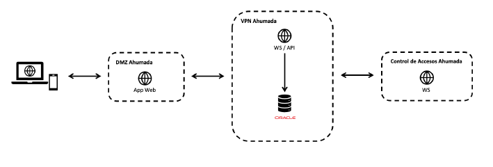
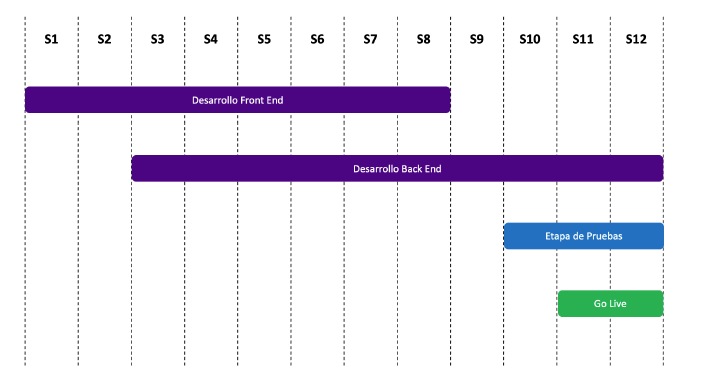

Propuesta de implementación de Aplicación de Inventario de Equipos
Antecedentes y Descripción del Requerimiento
Nos dirigimos a Farmacias Ahumada, una empresa líder en el sector farmacéutico en Chile, que se destaca por su compromiso con la mejora continua y la digitalización de sus procesos internos.
En este contexto, se ha identificado la necesidad de desarrollar un software especializado en la gestión y control del inventario de equipos en las farmacias. Este sistema optimizará el seguimiento y administración de los equipos, mejorando la eficiencia operativa y permitiendo una mayor visibilidad y control en tiempo real sobre los activos críticos.
Descripción de la Solución
Búsqueda de Equipos: Búsquedas avanzadas por nombre, número de serie u otros identificadores, con información sobre stock disponible, ubicación y estado operativo.
Ingreso de Nuevos Equipos: Interfaz intuitiva para registrar nuevos equipos, capturando detalles como modelo, fecha de adquisición, ubicación y especificaciones técnicas.
Carga de Presupuestos: Posibilidad de cargar documentos PDF de cotizaciones y seleccionar una para registrarla como licitación seleccionada, facilitando el proceso de adquisición.
Gestión de Instalación: Seguimiento de acuerdos de nivel de servicio (SLA) y sistema de aprobaciones por parte de los Químicos Farmacéuticos (QF), asegurando el cumplimiento de los estándares.
Arquitectura General
El sistema se desarrollará utilizando C# .NET para el backend, en combinación con PL/SQL (Oracle) como base de datos, aprovechando la experiencia interna en estas tecnologías. La arquitectura propuesta garantiza:
Integración eficiente con los sistemas actuales de Farmacias Ahumada.
Escalabilidad y sostenibilidad a largo plazo.
Minimización de la curva de aprendizaje y evitación de dependencia tecnológica.

Tiempo de Desarrollo
El tiempo estimado para el desarrollo completo del proyecto es de 12 semanas. Sin embargo, se pueden acordar entregas anticipadas por módulos específicos, lo que permitirá a Farmacias Ahumada comenzar a obtener beneficios de manera progresiva.

Inversión
Concepto
Valor (UF)
Desarrollo de Software
186
*Todos los valores expresados son + IVA.
Hitos de Pago
Hito de Pago
Descripción
Valor (UF)
1. Inicio Proyecto
Comienzo del desarrollo
62
2. Inicio Etapa de Pruebas
Inicio de pruebas
62
3. Cierre Proyecto
Finalización del proyecto
62
*Todos los valores expresados son + IVA.
Alcance y Restricciones
Accesos: Farmacias Ahumada proporcionará los accesos necesarios para el desarrollo.
Publicación de la Página Web: La responsabilidad de la publicación recae en Farmacias Ahumada, pero podrá coordinarse en colaboración con el desarrollador.
Análisis de Vulnerabilidades: El proyecto no incluye pruebas de seguridad exhaustivas, se implementará observaciones críticas sin costo adicional si Farmacias Ahumada externaliza un análisis de vulnerabilidades.
Condiciones Comerciales
Propuesta válida por 30 días.
Valores exclusivos para Farmacias Ahumada SpA.
El cliente asume los costos por transferencia bancaria internacional (si aplica).
Los servicios inician tras recibir la Orden de Compra del cliente, salvo excepciones acordadas previamente.
Modificaciones al alcance serán gestionadas mediante control de cambios con costos adicionales según corresponda.